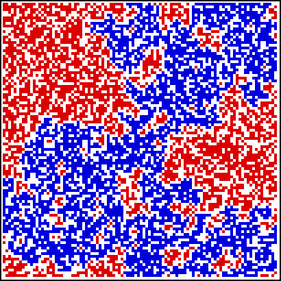

| For large enough values of p, there are single clusters going from one side of the lattice to the other. |
| These are called spanning clusters or percolation clusters. |
| In the large lattice limit, there is a critical value of p, the percolation threshold pc, below which spanning clusters do not arise. |
| Empirically determined, pc is approximately 0.59275. |
| Here is a picture for |
|  |
Return to percolation.